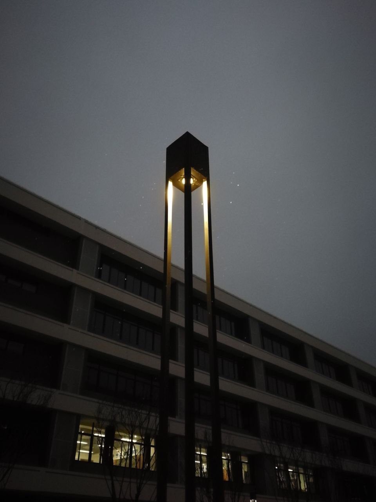
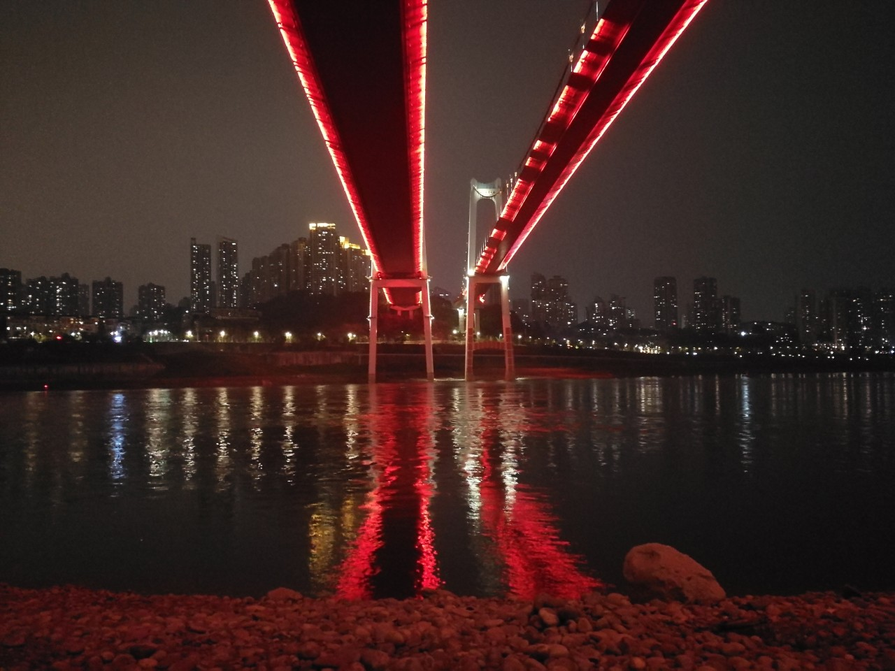
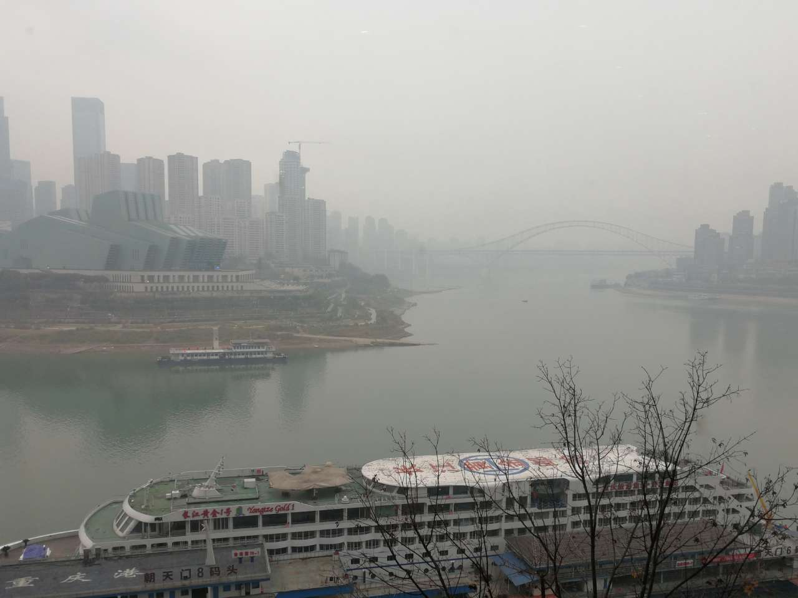
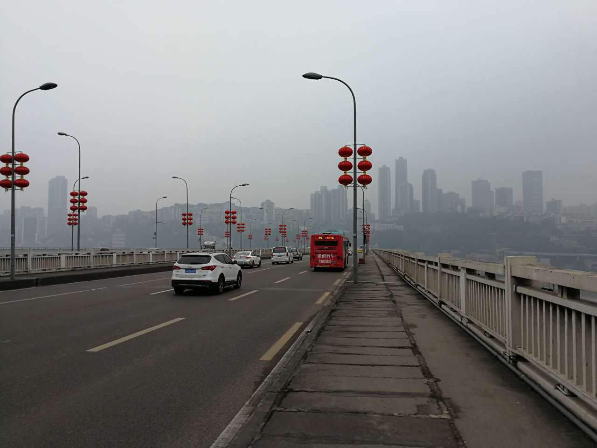
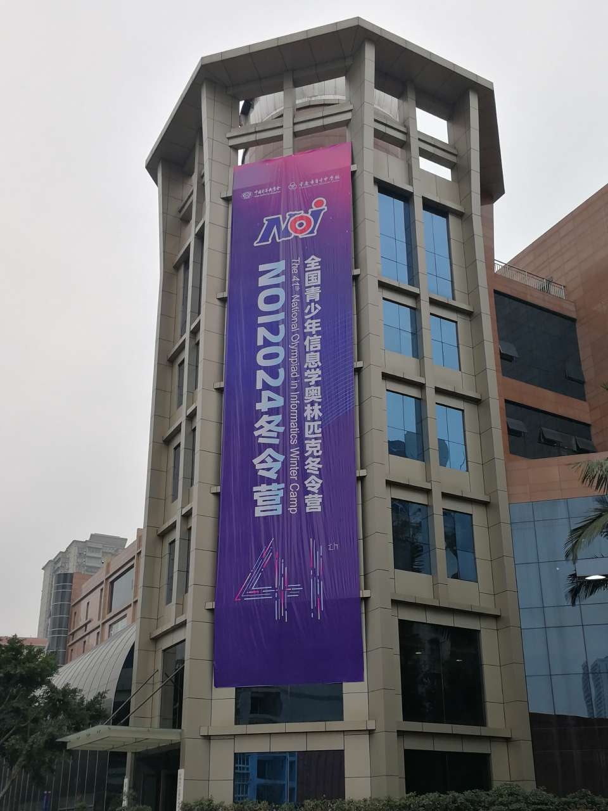
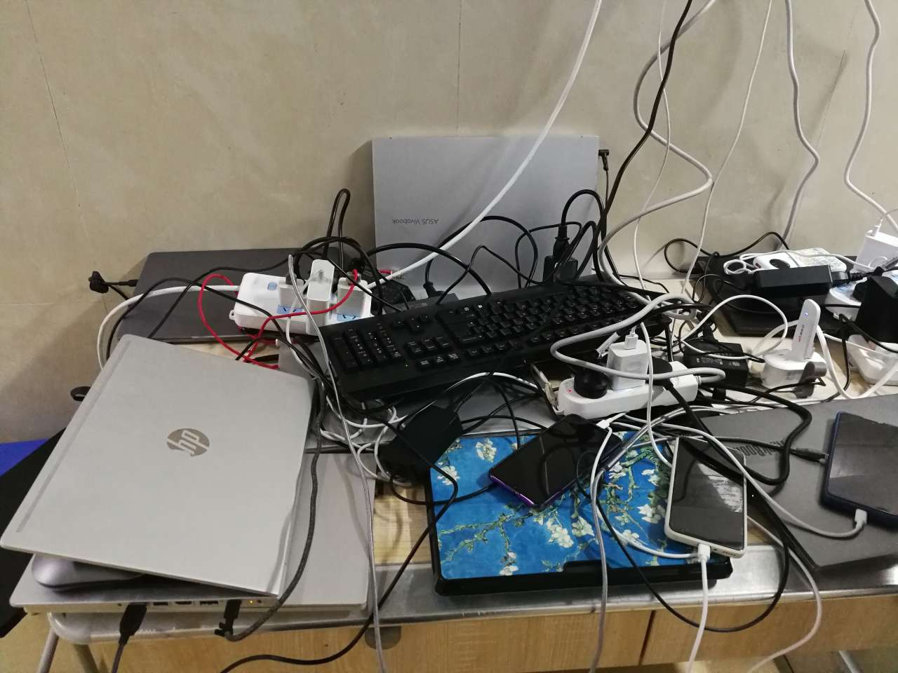
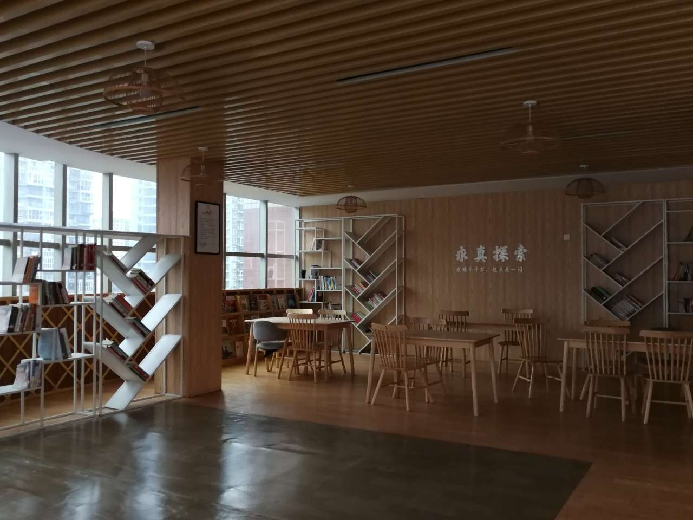
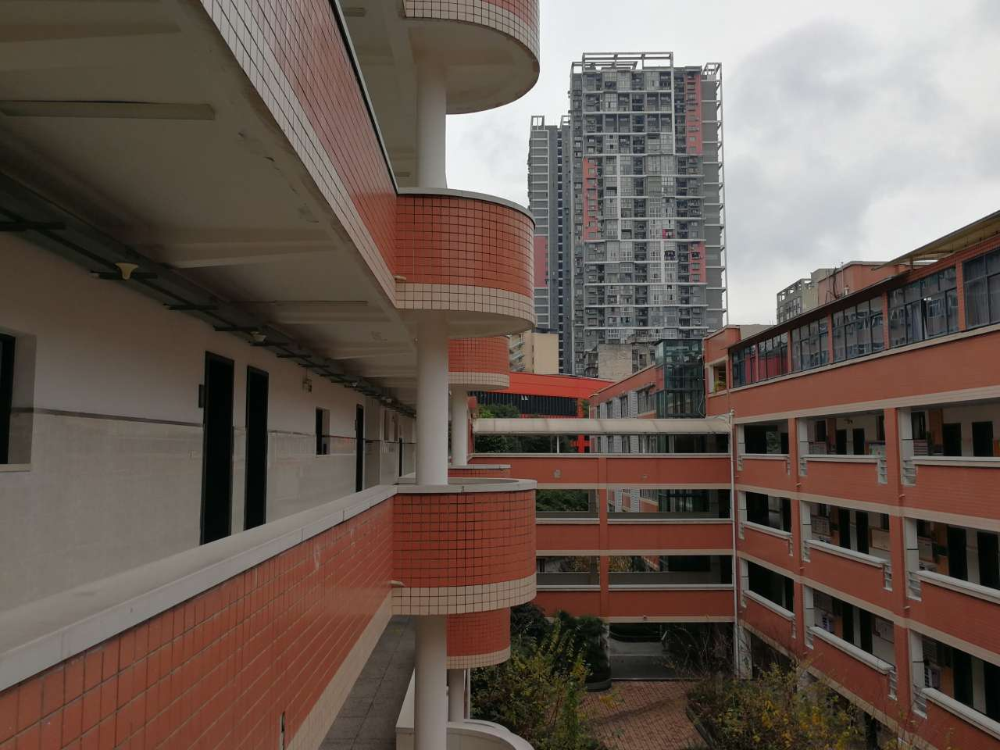

2024 冬奥会游记
2024 年冬季信息学奥林匹克竞赛集会，从成都七中到重庆育才，从校际联训到冬令营，历时 18 天，横跨四川盆地。
校际联训（1.18~1.24）
从机场打车去成都七中，司机先问我们晕不晕车，我们说不晕。然后他就无视导航走小路。提示音：前方有急转弯，减速慢行。再看仪表盘：妈呀 80km/h 不减速的。感觉成都平原一点也不平。我们这辆车是幸运的，听说有一辆同学打的车直接掉坑里了。
成都七中东部学校建成才半年，只有初一和高一的学生（小学部不清楚），设施很新。校门对面居然是座荒山，整个学校周边也少有人烟。
我们每人有一张校卡，可以在食堂和小卖部消费。虽然食堂做的几乎所有菜都有辣椒，带着暗红色调，但吃起来没多辣。一份荤菜 4 元，一份素菜 2 元，相当便宜。另外我在食堂学到了“抄手”是馄饨的意思。
第一天晚上我被蚊子烦得只睡了四个小时，后来老师给我们发电蚊香了。谁能想到冬天还得防蚊子啊。
每天 6:45 响起床铃，7:05 必须离开寝室。但是周六周日没有铃，我们一开始不知道，于是我们寝室在来七中的第一个周六集体睡到八点以后，应老师来叫了才醒。晚上熄灯时间是 22:40，但是宿管只要求熄灯，不要求你上床睡觉。


从成都到重庆（1.25）
为了把卡里的钱花光，早上我机智地在小卖部买了一桶方便面。中午大巴车停在服务区，我就吃提前买好的方便面——服务区也有方便面，只是价格翻倍。
大巴车开了五个小时才到。下车的位置实在不适合下车。车停在拥挤的马路上，我们还要跑到车左侧取行李箱。很快我发现，拥挤是全方位的，人行道挤，马路也挤，高楼快贴脸上了。
这里和成都七中周围的荒凉形成鲜明对比。拥挤的城市只好立体，立体又加重了拥挤。
在酒店安顿好，我们出去吃重庆火锅。锅底选了 微 微 辣，我看锅里已经铺满了辣椒，也想象不出更辣的锅底该长啥样。吃完火锅就步行去看长江。地图上直线距离 1.5km，晚八点出去，十点半才回来。在重庆逛街体力消耗和爬山差不多，而且考察对三维世界的观察和理解能力。和重庆相比，我之前到过的所有城市只能算二维的。

北大冬令营（1.26~1.27）

没收钱，但是食堂免费提供午餐，还可以拿草莓和橘子！
Day1
13:00 开始考试，可我过了至少 5 分钟才加载出题面。T1 发现可以规约到更小规模的问题，就做完了。13:59 通过。T2 T3 都没有思路。T2 想到了枚举笛卡尔树，可是枚举完不能高斯消元，还是不会枚举值域以外的做法。（我为什么不去想值域小的部分分呢？）15:42 T2 拿到了 11 分。16:15 T3 猜结论拿到了 40 分。一直在坐牢。
Day2
这回题面一下就出来了。还在想 T1 有没有高妙的模型，其实硬着头皮分类讨论就做完了，凭直觉贪心好像都很对。13:46 通过。T3 看着非常熟悉。1e5 2s 可能卡不掉平方暴力，想着暴力就会分块了，写着分块就多 log 了，可我还是觉得卡不掉。15:29 样例调完居然一遍过。T2 太不可做了，联系昨天没想出的 T2，我猜是 DP，结果会做了。朴素状压拿了 66 分。仔细想一下有用状态总数不大，换了一种存状态的方式，76 分。我感觉复杂度没问题啊。本地试了试，只是有点慢。没想到怎么卡常，而且只剩 25 分钟，打表时间也不够，就摆了。
旅游（1.28）
乘坐二号线转一号线打卡朝天门——长江、嘉陵江交汇处。

接着去人民解放纪念碑。然后徒步了好长一段走过重庆市长江大桥。1980 年 7 月 1 日竣工的桥，没有那么好看，可这是我走过的第一座一眼望不到头的桥，还是我在重庆走过的最好走的路！

手机导航难以分辨水平距离相近但高度差巨大的位置。一栋楼的周边地形往往高低各异，确定哪一层是一楼就成了问题。轻轨高度不怎么变，但一会儿穿过城市上空，一会儿又钻进了山洞。
我在重庆基本上有机会就点名字里带“辣”字的菜，也生存下去了。（不构成旅游建议。）不过育才的食堂很少放辣椒。
NOI 冬令营（1.29~2.5）

领到了六百多页的讲义，准备接受知识洗礼吧！
从校门口拖着行李箱到 5 楼寝室，共爬升 36m，克服重力做了好多功。
新建半年的学校和 1950 年建的学校区别相当大。育才中学校园内有好几栋居民楼，所以校内有门禁。洗衣机投币使用，5 元一次。有的洗衣机会自动甩干，有的不会。烘干机 1 元 10 分钟。寝室里没插座。每层楼梯口仅有四个插座，熄灯后还断电。这里常常被插线板和各种用电器挤满，形成电线瀑布。洗澡要出热水得用水卡。有时还要插拔一下卡才出热水。早上没有起床铃，八点后寝室走廊才亮灯。晚上熄灯时间也是 22:40。虽然落后， 但据我所知育才寝室的手机信号是所有学校的寝室中最好的。

三餐都是自助餐，早餐有蛋糕和奶，中餐晚餐有沙糖橘和饮料。
冬令营的作息比成都七中宽松很多。有很多时间睡觉或者逛校园。


考试不用举手而是举牌子：香蕉牌、水牌、草稿纸牌、电脑牌、厕所牌……很有想象力。
考试 8:00 开始。T1 好简单。T2 好简单。T3 好简单。离谱，我怎么全会了。很兴奋地去上厕所，还要排队，9:17 回来写代码。这下发现 T3 假了，没事很正常。9:26 写完 T1。然后发现 T2 也假了。我打算先写保证复杂度的假做法，略加修改可得保证正确性的暴力做法。可是假做法写挂了，花了不少时间调试。假做法写完马上就改成了保证正确性的做法。神奇的是它在时限内通过了所有样例。此时是 11:23。我稍微构造了一些的数据，也卡不掉，就放一边了。之后就写了 T3 的暴力+特殊性质，25 分。12:45 我启动了 selfeval（之前没用过），结果符合预期。接下来我给 T2 对拍。距离比赛结束不到 1 分钟的时候 n=4 对拍出错。我懵了半个小时。后来知道是暴力写挂。
听讲评的时候发现我 T2 的做法复杂度是对的。